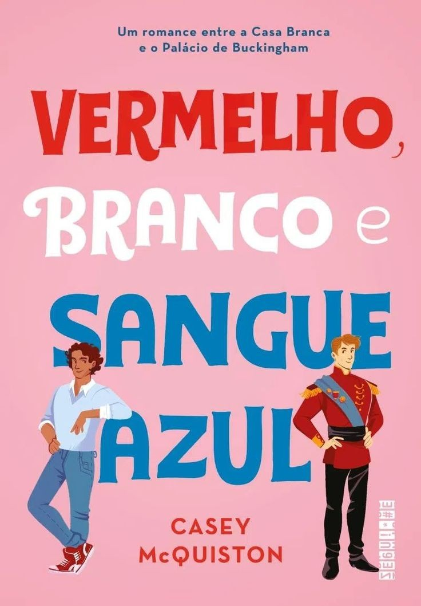
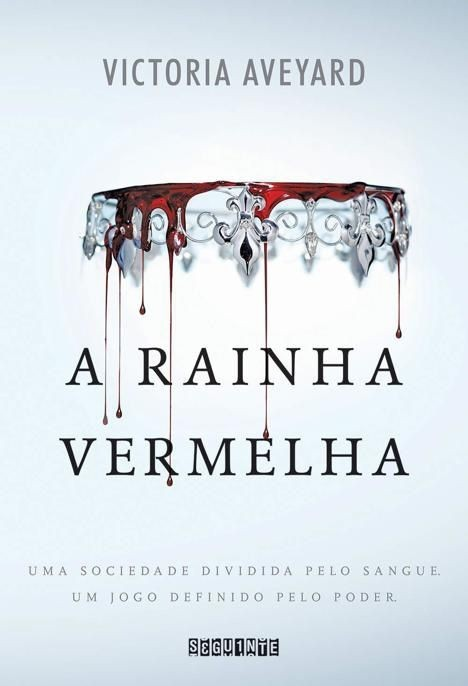
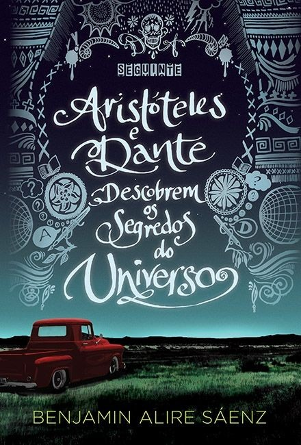
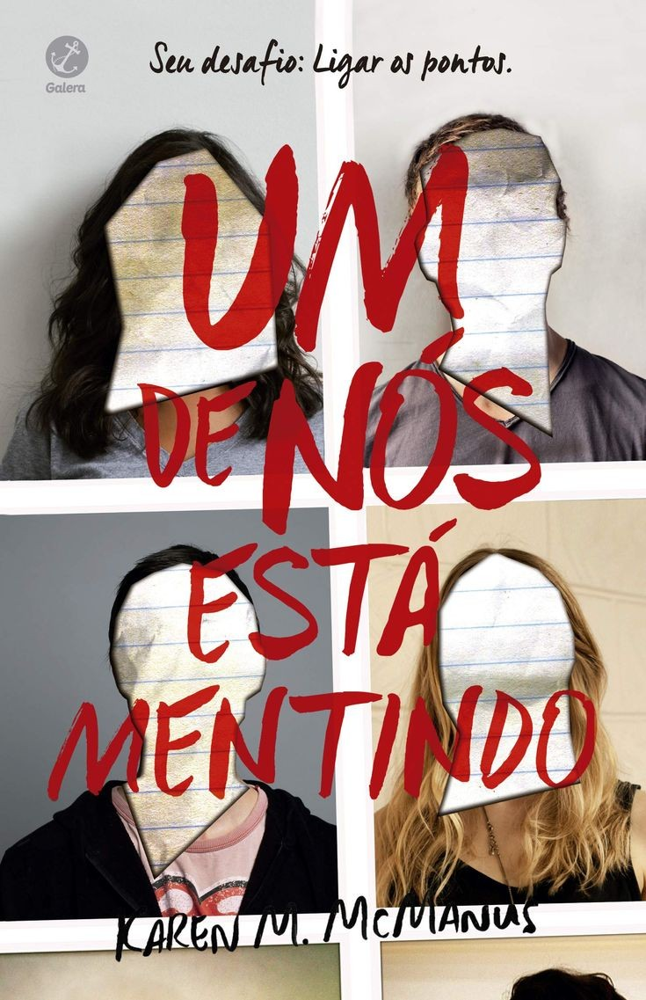

A leitura é um dos hábitos mais saudáveis e gostosos para os adolescentes. Afinal, além de auxiliar no desenvolvimento cognitivo, ela também proporciona momentos de distração e diversão.
Os escritores seguem inovando para trazer os melhores livros para os jovens e apostam em histórias envolventes sobre os mais diversos temas.
O objetivo é aproximar os adolescentes da leitura e fazer com que eles se envolvam com os personagens, histórias e tramas.
Embora o Brasil ainda tenha um índice baixo de leitores jovens, os livros para essa faixa etárias possuem muita qualidade e podem ser importantíssimos no desenvolvimento dos adolescentes.
Antes de mostrar a lista, lembramos que a variedade de livros para adolescente é bem vasta e existem opções e temas para todos os gostos: romance, aventura, suspense, terror e por aí vai!
Por esse motivo, preparamos um guia com os livros mais vendidos para jovens.
Se você é um fã de leituras, confira agora essas opções de livros e aproveite essas dicas imperdíveis!

Vermelho, branco e sangue azul - Casey McQuiston (+16)
O que pode acontecer quando o filho da presidenta dos Estados Unidos se apaixona pelo príncipe da Inglaterra? Quando sua mãe foi eleita presidenta dos Estados Unidos, Alex Claremont-Diaz se tornou o novo queridinho da mídia norte-americana.Bonito, carismático e com personalidade forte, Alex tem tudo para seguir os passos de seus pais e conquistar uma carreira na política, como tanto deseja. Mas quando sua família é convidada para o casamento real do príncipe britânico Philip, Alex tem que encarar o seu primeiro desafio diplomático: lidar com Henry, irmão mais novo de Philip, o príncipe mais adorado do mundo, com quem ele é constantemente comparado ― e que ele não suporta. O encontro entre os dois sai pior do que o esperado, e no dia seguinte todos os jornais do mundo estampam fotos de Alex e Henry caídos em cima do bolo real, insinuando uma briga séria entre os dois. Para evitar um desastre diplomático, eles passam um fim de semana fingindo ser melhores amigos e não demora para que essa relação evolua para algo que nenhum dos dois poderia imaginar ― e que não tem nenhuma chance de dar certo. Ou tem?

2- Mentirosos- E lockhart (+ 13)
Um suspense moderno e sofisticado, Mentirosos é impossível de largar até que todos seus mistérios sejam desvendados. A prosa lírica e o estilo seco e denso farão você mergulhar de cabeça no mundo dos Sinclair, uma família rica e tradicional, e nas crescentes angústias da protagonista Cadence - para então vir à tona completamente impactado. Na família Sinclair, ninguém é carente, criminoso, viciado ou fracassado. Mas talvez isso seja mentira.Os Sinclair são uma família rica e renomada, que se recusa a admitir que está em decadência e se agarra a todo custo às tradições. Assim, todo ano o patriarca, suas três filhas e seus respectivos filhos passam as férias de verão em sua ilha particular. Cadence - neta primogênita e principal herdeira -, seus primos Johnny e Mirren e o amigo Gat são inseparáveis desde pequenos, e juntos formam um grupo chamado Mentirosos. Durante o verão de seus quinze anos, as férias idílicas de Cadence são interrompidas quando a garota sofre um estranho acidente. Ela passa os próximos dois anos em um período conturbado, com amnésia, depressão, fortes dores de cabeça e muitos analgésicos. Toda a família a trata com extremo cuidado e se recusa a dar mais detalhes sobre o ocorrido... até que Cadence finalmente volta à ilha para juntar as lembranças do que realmente aconteceu
3- A rainha vermelha - Victoria Aveyard (+11)
O mundo de Mare Barrow é dividido pelo sangue: vermelho ou prateado. Mare e sua família são vermelhos: plebeus, humildes, destinados a servir uma elite prateada cujos poderes sobrenaturais os tornam quase deuses. Mare rouba o que pode para ajudar sua família a sobreviver e não tem esperanças de escapar do vilarejo miserável onde mora. Entretanto, numa reviravolta do destino, ela consegue um emprego no palácio real, onde, em frente ao rei e a toda a nobreza, descobre que tem um poder misterioso… Mas como isso seria possível, se seu sangue é vermelho? Em meio às intrigas dos nobres prateados, as ações da garota vão desencadear uma dança violenta e fatal, que colocará príncipe contra príncipe - e Mare contra seu próprio coração.
4- Aristóteles e Dante descobrem os segredos do Universo - Benjamin Alire Sáenz (+16)
Em um verão tedioso, os jovens Aristóteles e Dante são unidos pelo acaso e, embora sejam completamente diferentes um do outro, iniciam uma amizade especial, do tipo que muda a vida das pessoas e dura para sempre. E é através dessa amizade que Ari e Dante vão descobrir mais sobre si mesmos - e sobre o tipo de pessoa que querem ser. Dante sabe nadar. Ari não. Dante é articulado e confiante. Ari tem dificuldade com as palavras e duvida de si mesmo. Dante é apaixonado por poesia e arte. Ari se perde em pensamentos sobre seu irmão mais velho, que está na prisão. Um garoto como Dante, com um jeito tão único de ver o mundo, deveria ser a última pessoa capaz de romper as barreiras que Ari construiu em volta de si. Mas quando os dois se conhecem, logo surge uma forte ligação. Eles compartilham livros, pensamentos, sonhos, risadas - e começam a redefinir seus próprios mundos. Assim, descobrem que o amor e a amizade talvez sejam a chave para desvendar os segredos do Universo.